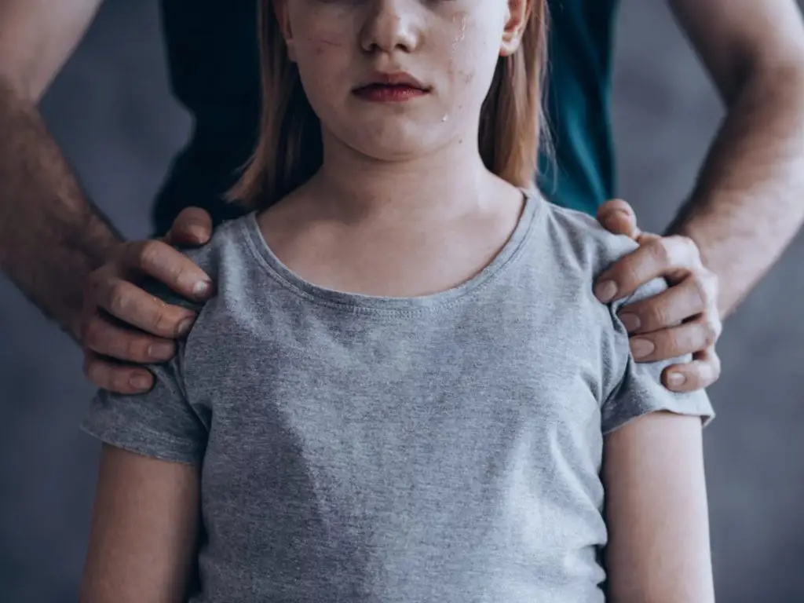

Violencia Física
Es cuando el agresor utiliza el miedo y la agresión, para así paralizar
a su víctima, generando daño corporal con golpes, cortadas, u objetos,
por ejemplo, con armas. Por ejemplo, cuando los padres/madres de
familia golpean a sus hijos/as. Es importante destacar que el maltrato
físico está íntegramente ligado al maltrato emocional.

Violencia económica
Se refiere al exceso de dominio financiero en
el seno familiar. En estos casos el agresor que
provoca este desequilibrio impone restricciones de tipo
financiero, privando a hijos/as y/o pareja de gozar de
bienes materiales por falta de dinero, incluso no permite
que su pareja goce del beneficio del trabajo. Esta situación
genera situaciones de violencia en público o privado,
cargadas de ofensas, gritos, insultos y amenazas. También
cuando se abusa o se utiliza sin suconsentimiento
el valor de la pensión o subsidio de la persona mayor que
convive en el hogar.
Violencia sexual
Se refiere al hecho de tener cualquier tipo
de contacto sexual de manera obligada con otra miembro de
la familia. El agresor suele agraviar, ofender y dominar a la
víctima, exhibiéndose ante ella con una violencia provocadora
y a la vez ofensiva.

Violencia emocional
Es aquella cuyo objetivo principal es lastimar y herir las emociones
de otro miembro de la familia, por medio de humillaciones, amenazas
e insultos.Esta situación causa perturbación en el seno familiar, y
deriva en un decaimiento de la autoestima tanto en la víctima de este
tipo de maltrato, como en quienes suelen presenciarla.